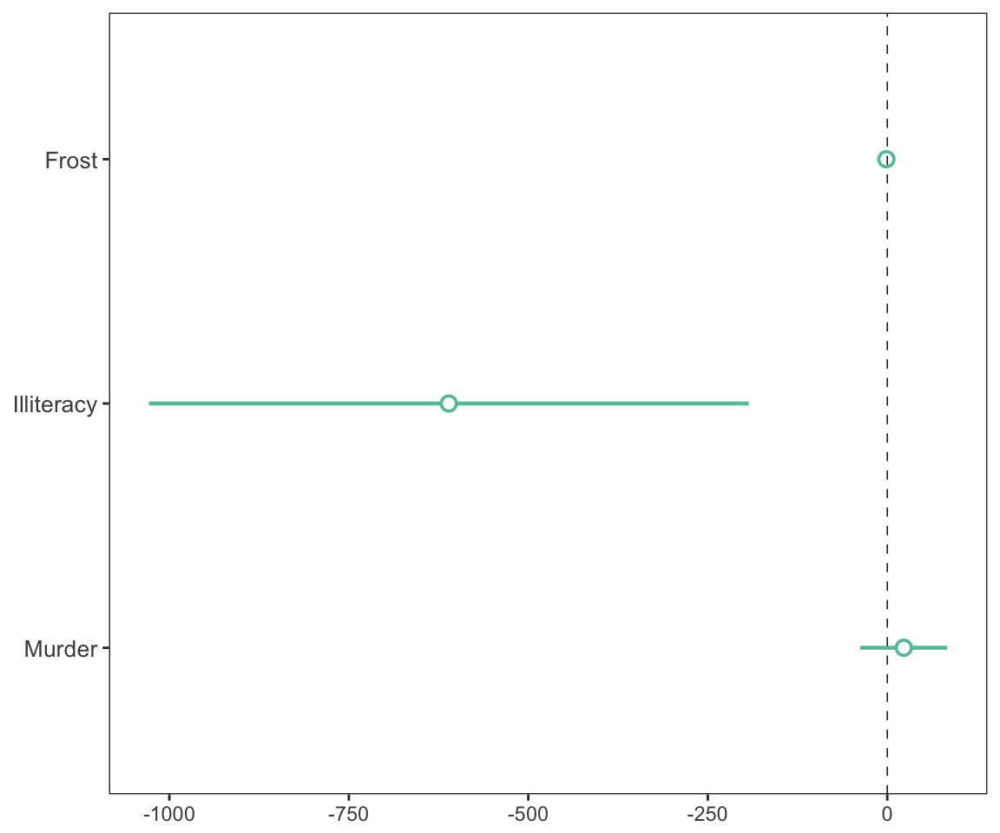
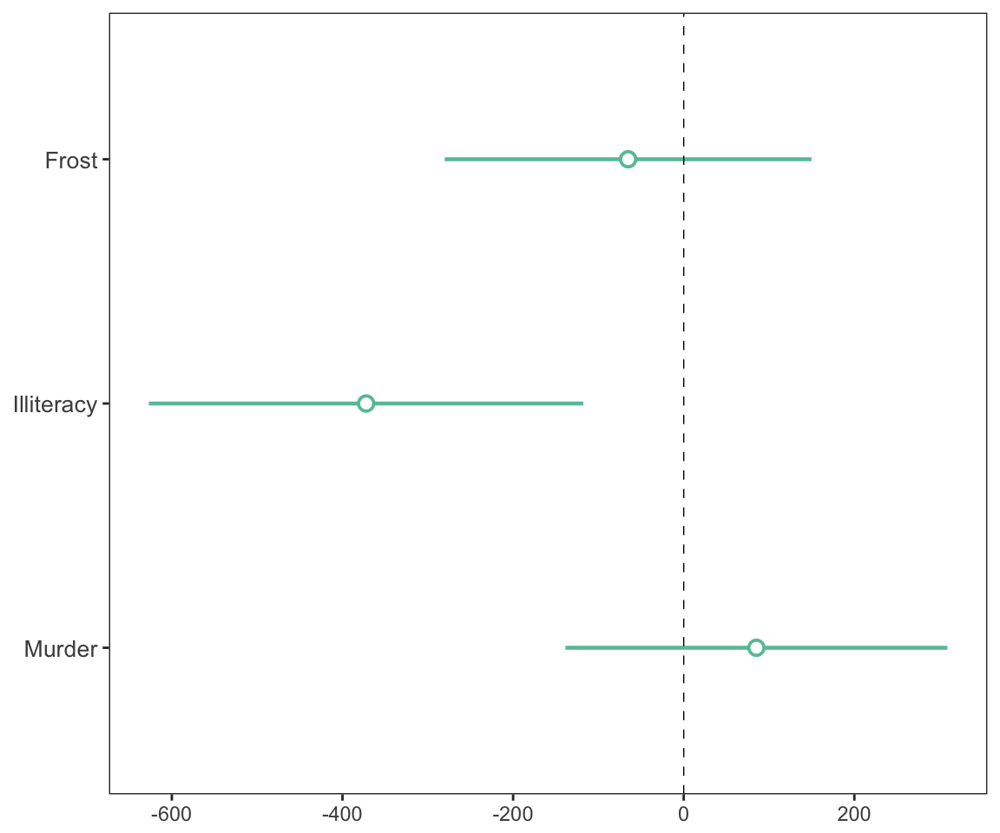
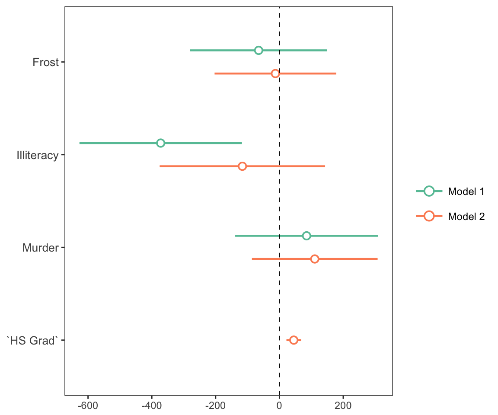
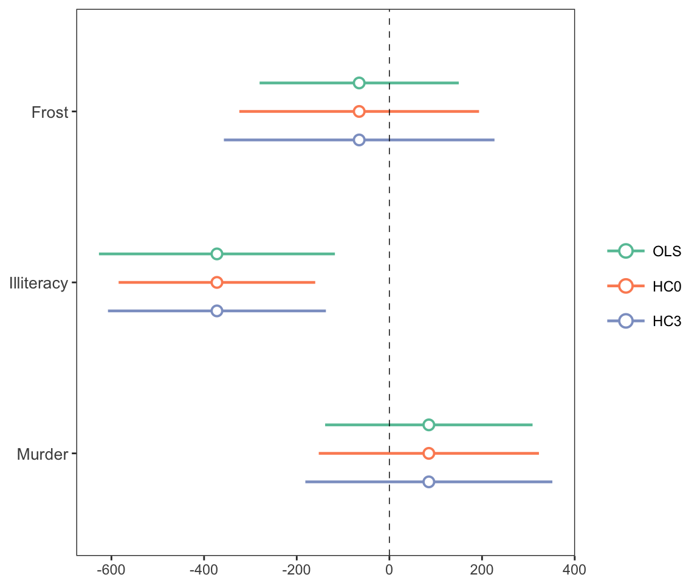
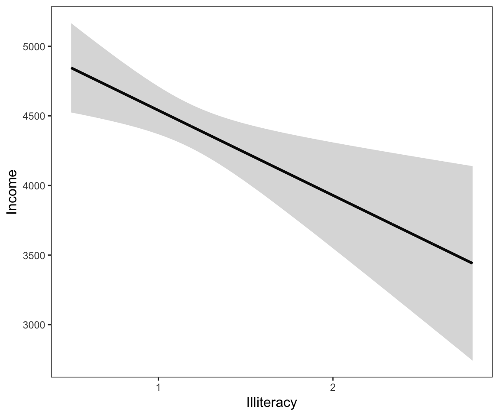
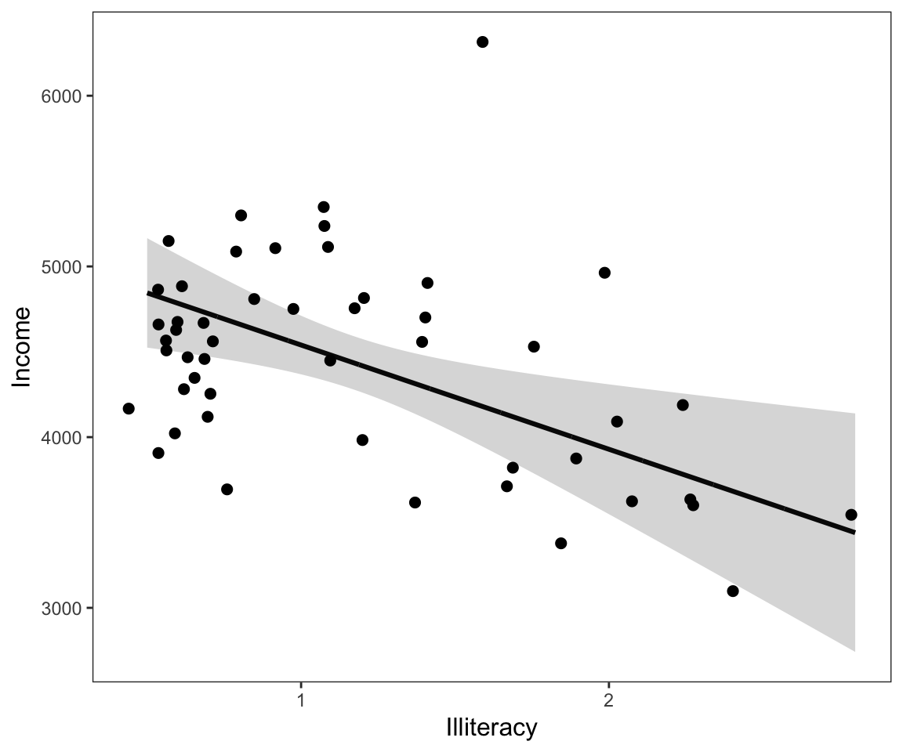
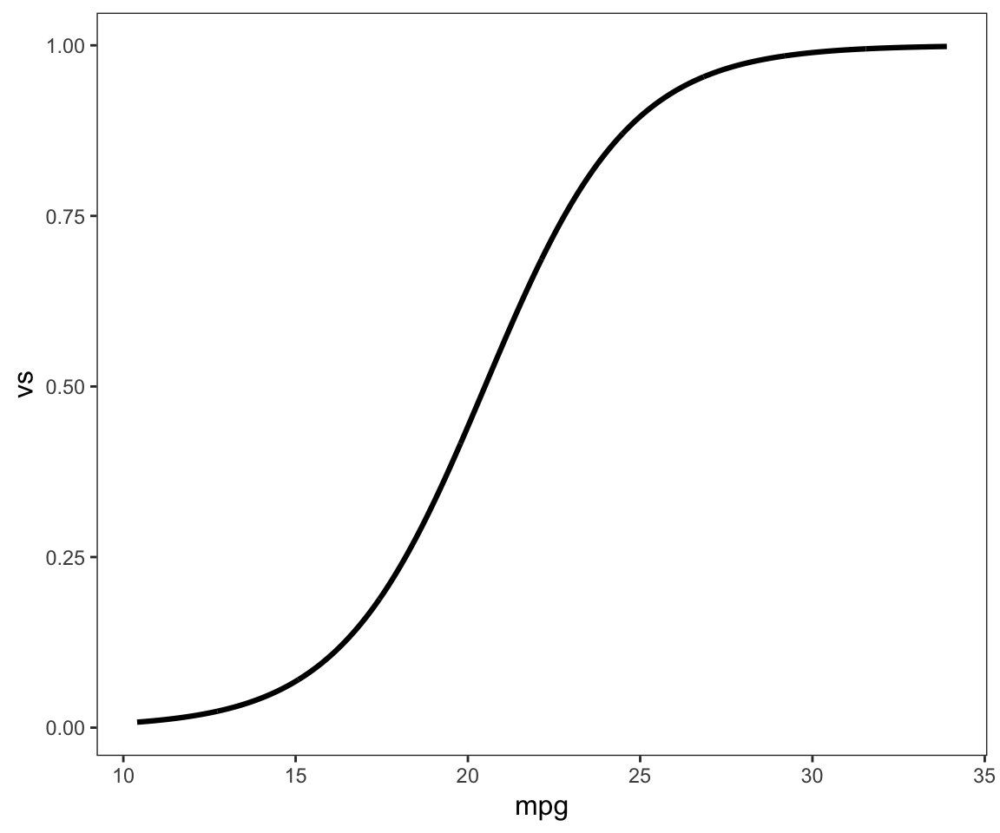
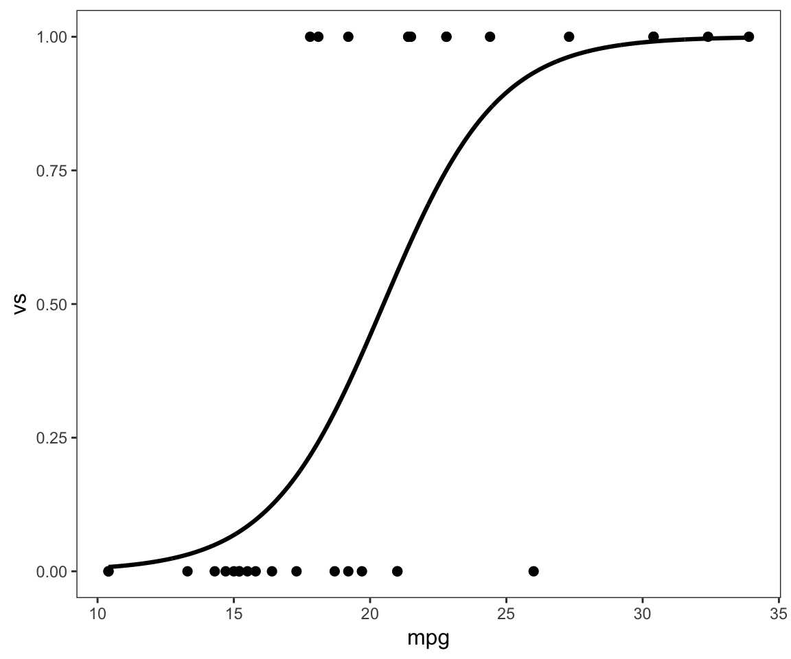

Tools for summarizing and visualizing regression models
Jacob Long
2017-11-10
When sharing analyses with colleagues unfamiliar with R, I found that the output generally was not clear to them. Things were even worse if I wanted to give them information that is not included in the summary like robust standard errors, scaled coefficients, and VIFs since the functions for estimating these don’t append them to a typical regression table. After creating output tables “by hand” on multiple occasions, I thought it best to pack things into a reusable function: It became summ.
With no user-specified arguments except a fitted model, the output of summ looks like this:
# Fit model
fit <- lm(Income ~ Frost + Illiteracy + Murder, data = as.data.frame(state.x77))
summ(fit)## MODEL INFO:
## Observations: 50
## Dependent Variable: Income
##
## MODEL FIT:
## F(3,46) = 4.05, p = 0.01
## R-squared = 0.21
## Adj. R-squared = 0.16
##
## Standard errors: OLS
## Est. S.E. t val. p
## (Intercept) 5111.1 416.58 12.27 0 ***
## Frost -1.25 2.11 -0.59 0.56
## Illiteracy -610.71 213.14 -2.87 0.01 **
## Murder 23.07 30.94 0.75 0.46Like any output, this one is somewhat opinionated—some information is shown that perhaps not everyone would be interested in, some may be missing. That, of course, was the motivation behind the creation of the function; I didn’t like the choices made by R’s core team with summary!
Report robust standard errors
One of the problems that originally motivated the creation of this function was the desire to efficiently report robust standard errors—while it is easy enough for an experienced R user to calculate robust standard errors, there are not many simple ways to include the results in a regression table as is common with the likes of Stata, SPSS, etc.
Robust standard errors require the user to have the sandwich package installed. They do not need to be loaded.
There are multiple types of robust standard errors that you may use, ranging from “HC0” to “HC5”. Per the recommendation of the authors of the sandwich package, the default is “HC3”. Stata’s default is “HC1”, so you may want to use that if your goal is to replicate Stata analyses.
summ(fit, robust = TRUE, robust.type = "HC3")## MODEL INFO:
## Observations: 50
## Dependent Variable: Income
##
## MODEL FIT:
## F(3,46) = 4.05, p = 0.01
## R-squared = 0.21
## Adj. R-squared = 0.16
##
## Standard errors: Robust, type = HC3
## Est. S.E. t val. p
## (Intercept) 5111.1 537.81 9.5 0 ***
## Frost -1.25 2.87 -0.44 0.66
## Illiteracy -610.71 196.88 -3.1 0 **
## Murder 23.07 36.85 0.63 0.53Robust standard errors can also be calculated for generalized linear models (i.e., glm objects) though there is some debate whether they should be used for models fit iteratively with non-normal errors. In the case of svyglm, the standard errors that package calculates are already robust to heteroskedasticity, so a robust = TRUE parameter will be ignored with a warning.
You may also specify with cluster argument the name of a variable in the input data or a vector of clusters to get cluster-robust standard errors.
Standardized beta coefficients
Some prefer to use scaled coefficients in order to avoid dismissing an effect as “small” when it is just the units of measure that are small. scaled betas are used instead when scale = TRUE. To be clear, since the meaning of “standardized beta” can vary depending on who you talk to, this option mean-centers the predictors as well but does not alter the dependent variable whatsoever. If you want to scale the dependent variable too, just add the scale.response = TRUE argument.
summ(fit, scale = TRUE)## MODEL INFO:
## Observations: 50
## Dependent Variable: Income
##
## MODEL FIT:
## F(3,46) = 4.05, p = 0.01
## R-squared = 0.21
## Adj. R-squared = 0.16
##
## Standard errors: OLS
## Est. S.E. t val. p
## (Intercept) 4435.8 79.77 55.61 0 ***
## Frost -65.19 109.69 -0.59 0.56
## Illiteracy -372.25 129.91 -2.87 0.01 **
## Murder 85.18 114.22 0.75 0.46
##
## All continuous predictors are mean-centered and scaled by 1 s.d.You can also choose a different number of standard deviations to divide by for standardization. Andrew Gelman has been a proponent of dividing by 2 standard deviations; if you want to do things that way, give the argument n.sd = 2.
summ(fit, scale = TRUE, n.sd = 2)## MODEL INFO:
## Observations: 50
## Dependent Variable: Income
##
## MODEL FIT:
## F(3,46) = 4.05, p = 0.01
## R-squared = 0.21
## Adj. R-squared = 0.16
##
## Standard errors: OLS
## Est. S.E. t val. p
## (Intercept) 4435.8 79.77 55.61 0 ***
## Frost -130.38 219.37 -0.59 0.56
## Illiteracy -744.5 259.83 -2.87 0.01 **
## Murder 170.36 228.43 0.75 0.46
##
## All continuous predictors are mean-centered and scaled by 2 s.d.Note that this is achieved by refitting the model. If the model took a long time to fit initially, expect a similarly long time to refit it.
Mean-centered variables
In the same vein as the standardization feature, you can keep the original scale while still mean-centering the predictors with the center = TRUE argument.
summ(fit, center = TRUE)## MODEL INFO:
## Observations: 50
## Dependent Variable: Income
##
## MODEL FIT:
## F(3,46) = 4.05, p = 0.01
## R-squared = 0.21
## Adj. R-squared = 0.16
##
## Standard errors: OLS
## Est. S.E. t val. p
## (Intercept) 4435.8 79.77 55.61 0 ***
## Frost -1.25 2.11 -0.59 0.56
## Illiteracy -610.71 213.14 -2.87 0.01 **
## Murder 23.07 30.94 0.75 0.46
##
## All continuous predictors are mean-centered.Confidence intervals
In many cases, you’ll learn more by looking at confidence intervals than p-values. You can request them from summ.
summ(fit, confint = TRUE, digits = 2)## MODEL INFO:
## Observations: 50
## Dependent Variable: Income
##
## MODEL FIT:
## F(3,46) = 4.05, p = 0.01
## R-squared = 0.21
## Adj. R-squared = 0.16
##
## Standard errors: OLS
## Est. 2.5% 97.5% t val. p
## (Intercept) 5111.1 4294.62 5927.57 12.27 0 ***
## Frost -1.25 -5.39 2.88 -0.59 0.56
## Illiteracy -610.71 -1028.46 -192.97 -2.87 0.01 **
## Murder 23.07 -37.57 83.72 0.75 0.46You can adjust the width of the confidence intervals, which are by default 95% CIs.
summ(fit, confint = TRUE, ci.width = .5, digits = 2)## MODEL INFO:
## Observations: 50
## Dependent Variable: Income
##
## MODEL FIT:
## F(3,46) = 4.05, p = 0.01
## R-squared = 0.21
## Adj. R-squared = 0.16
##
## Standard errors: OLS
## Est. 25% 75% t val. p
## (Intercept) 5111.1 4830.12 5392.07 12.27 0 ***
## Frost -1.25 -2.68 0.17 -0.59 0.56
## Illiteracy -610.71 -754.47 -466.96 -2.87 0.01 **
## Murder 23.07 2.21 43.94 0.75 0.46You might also want to drop the p-values altogether.
summ(fit, confint = TRUE, pvals = FALSE, digits = 2)## MODEL INFO:
## Observations: 50
## Dependent Variable: Income
##
## MODEL FIT:
## F(3,46) = 4.05, p = 0.01
## R-squared = 0.21
## Adj. R-squared = 0.16
##
## Standard errors: OLS
## Est. 2.5% 97.5% t val.
## (Intercept) 5111.10 4294.62 5927.57 12.27
## Frost -1.25 -5.39 2.88 -0.59
## Illiteracy -610.71 -1028.46 -192.97 -2.87
## Murder 23.07 -37.57 83.72 0.75Note that you can omit p-values regardless of whether you have requested confidence intervals.
Generalized and Mixed models
summ has been expanding its range of supported model types. glm was a natural extension and will cover most use cases.
fitg <- glm(vs ~ drat + mpg, data = mtcars, family = binomial)
summ(fitg)## MODEL INFO:
## Observations: 32
## Dependent Variable: vs
## Error Distribution: binomial
## Link function: logit
##
## MODEL FIT:
## Pseudo R-squared (Cragg-Uhler) = 0.59
## Pseudo R-squared (McFadden) = 0.42
## AIC = 31.35, BIC = 35.75
##
## Standard errors: MLE
## Est. S.E. z val. p
## (Intercept) -7.76 4 -1.94 0.05 .
## drat -0.56 1.33 -0.42 0.67
## mpg 0.48 0.2 2.38 0.02 *For exponential family models, especially logit and Poisson, you may be interested in getting odds ratios rather than the linear beta estimates. summ can handle that!
summ(fitg, odds.ratio = TRUE)## MODEL INFO:
## Observations: 32
## Dependent Variable: vs
## Error Distribution: binomial
## Link function: logit
##
## MODEL FIT:
## Pseudo R-squared (Cragg-Uhler) = 0.59
## Pseudo R-squared (McFadden) = 0.42
## AIC = 31.35, BIC = 35.75
##
## Standard errors: MLE
## Odds Ratio 2.5% 97.5% z val. p
## (Intercept) 0 0 1.09 -1.94 0.05 .
## drat 0.57 0.04 7.77 -0.42 0.67
## mpg 1.61 1.09 2.39 2.38 0.02 *Standard errors are omitted for odds ratio estimates since the confidence intervals are not symmetrical.
You can also get summaries of merMod objects, the mixed models from the lme4 package.
## MODEL INFO:
## Observations: 180
## Dependent Variable: Reaction
## Type: Mixed effects linear regression
##
## MODEL FIT:
## AIC = 1755.63, BIC = 1774.79
##
## FIXED EFFECTS:
## Est. S.E. t val. p
## (Intercept) 251.41 6.82 36.84 0 ***
## Days 10.47 1.55 6.77 0 ***
##
## p values calculated using Kenward-Roger d.f. = 17
##
## RANDOM EFFECTS:
## Group Parameter Std.Dev.
## Subject (Intercept) 24.74
## Subject Days 5.92
## Residual 25.59
##
## Grouping variables:
## Group # groups ICC
## Subject 18 0.48Note that the summary omits p-values by default unless the package is installed for linear models. There’s no clear-cut way to derive p-values with linear mixed models and treating the t-values like you would for OLS models will lead to inflated Type 1 error rates. Confidence intervals are better, but not perfect. Kenward-Roger calculated degrees of freedom are fairly good under many circumstances and those are used by default when package is installed. Be aware that for larger datasets, this procedure can take a long time. See the documentation (?summ.merMod) for more info.
You can also get an estimated model R-squared for mixed models using the Nakagawa & Schielzeth (2013) procedure with code adapted from the MuMIn package. To get those, simply set r.squared = TRUE but note that it sometimes takes a long time to run and is a bit error-prone.
Plotting coefficients and predicted lines
plot_summs and plot_coefs
When it comes time to share your findings, especially in talks, tables are often not the best way to capture people’s attention and quickly convey the results. Variants on what are known by some as “forest plots” have been gaining popularity for presenting regression results.
For that, jtools provides plot_summs and plot_coefs. plot_summs gives you a plotting interface to summ and allows you to do so with multiple models simultaneously (assuming you want to apply the same arguments to each model).
Here’s a basic, single-model use case.
plot_summs(fit)
Note that the intercept is omitted by default because it often distorts the scale and generally isn’t of theoretical interest. You can change this behavior or omit other coefficients with the omit.coefs argument.
In the above example, the differing scales of the variables makes it kind of difficult to make a quick assessment. No problem, we can just use the tools built into summ for that.
plot_summs(fit, scale = TRUE)
See? Now we have a better idea of how the uncertainty and magnitude of effect differs for these variables. Note that by default the width of the confidence interval is .95, but this can be changed with the ci_level argument.
Another compelling use case for plot_summs is robust standard errors.
Comparison of multiple models simultaneously is another benefit of plotting. This is especially true when the models are nested. Let’s fit a second model and compare.
fit2 <- lm(Income ~ Frost + Illiteracy + Murder + `HS Grad`,
data = as.data.frame(state.x77))
plot_summs(fit, fit2, scale = TRUE)
This is a classic case in which adding a new predictor causes another one’s estimate to get much closer to zero.
plot_coefs is very similar to plot_summs, but does not offer the features that summ does. The tradeoff, though, is that it allows for model types that summ does not — any model supported by tidy from the broom package should work. Additionally, if you want to compare summ outputs with different arguments, you can use plot_coefs for that because plot_coefs treats summ objects as a model type.
Let’s look at how we can use plot_coefs to look at what happens when we use non-robust standard errors and two different robust standard error specifications.
First, we save the summ objects:
s1 <- summ(fit, scale = TRUE)
s2 <- summ(fit, scale = TRUE, robust = TRUE, robust.type = "HC0")
s3 <- summ(fit, scale = TRUE, robust = TRUE, robust.type = "HC3")Now we give the summ objects to plot_coefs. Note the use of the model.names argument to make which model is which clearer.
plot_coefs(s1, s2, s3, model.names = c("OLS","HC0","HC3"))
So in this case we can see that for Frost and Murder, each subsequent standard error specification increases the standard errors. The pattern doesn’t quite hold for Illiteracy.
effect_plot
Sometimes to really understand what your model is telling you, you need to see the kind of predictions it will give you. For that, you can use effect_plot, which is similar to interact_plot (see other vignette) but for main effects in particular.
Here’s the most basic use with our linear model:
effect_plot(fit, pred = Illiteracy)
Okay, not so illuminating. Let’s see the uncertainty around this line.
effect_plot(fit, pred = Illiteracy, interval = TRUE)
Now we’re getting somewhere.
How does this compare to the observed data? Let’s see!
effect_plot(fit, pred = Illiteracy, interval = TRUE, plot.points = TRUE)
Now we’re really learning something about our model—and it looks like the linear fit is basically correct.
Another time that effect_plot is useful is for non-linear (generalized) models. Let’s plot our logit model from earlier.
effect_plot(fitg, pred = mpg)
Aha! A lovely logistic curve. Now you know that when mpg is from about 30 and higher, it no longer is giving any appreciable increase in probability because it has already reached 1.
Next, we’ll plot the observed values. Note the jitter = 0; by default, a small “jitter” is applied to the plotted points in case they overlap, but with a logit model it would make it appear that some of the points are something other than 0 or 1.
effect_plot(fitg, pred = mpg, plot.points = TRUE, jitter = 0)
Now you can see how at the low and high ends of mpg, there are clusters of 0 and 1 values while near the middle of the range, there are values of both 0 and 1.
Table output for Word and RMarkdown documents
Sometimes you really do want a table, but it can’t be standard R output. For that, you can use export_summs. It is a wrapper around huxtable’s huxreg function that will give you nice looking output if used in RMarkdown documents or, if requested, printed to a Word file. In the latter case, complicated models often need more fine-tuning in Word, but it gets you started.
Like plot_summs, export_summs is designed to give you the features available in summ, so you can request things like robust standard errors and variable scaling.
Here’s an example of what to expect in a document like this one:
export_summs(fit, fit2, scale = TRUE)| (1) | (2) | |
| (Intercept) | 4435.80 *** | 2047.29 *** |
| (79.77) | (628.34) | |
| Frost | -65.19 | -12.53 |
| (109.69) | (97.31) | |
| Illiteracy | -372.25 ** | -116.13 |
| (129.91) | (132.30) | |
| Murder | 85.18 | 110.76 |
| (114.22) | (100.54) | |
| `HS Grad` | 44.97 *** | |
| (11.76) | ||
| N | 50 | 50 |
| R2 | 0.21 | 0.40 |
| All continuous predictors are mean-centered and scaled by 1 standard deviation. *** p < 0.001; ** p < 0.01; * p < 0.05. | ||
When using RMarkdown, set results = 'asis' for the chunk with export_summs to get the right formatting for whatever type of output document (HTML, PDF, etc.)
To format the error statistics, simply put the statistics desired in curly braces wherever you want them in a character string. For example, if you want the standard error in parentheses, the argument would be "({std.error})", which is the default. Some other ideas:
"({statistic})", which gives you the test statistic in parentheses."({statistic}, p = {p.value})", which gives the test statistic followed by a “p =” p value all in parentheses. Note that you’ll have to pay special attention to rounding if you do this to keep cells sufficiently narrow."[{conf.low}, {conf.high}]", which gives the confidence interval in the standard bracket notation. You could also explicitly write the confidence level, e.g.,"95% CI [{conf.low}, {conf.high}]".
Here’s an example with confidence intervals instead of standard errors:
export_summs(fit, fit2, scale = TRUE,
error_format = "[{conf.low}, {conf.high}]")| (1) | (2) | |
| (Intercept) | 4435.80 *** | 2047.29 *** |
| [4279.45, 4592.15] | [815.77, 3278.81] | |
| Frost | -65.19 | -12.53 |
| [-280.17, 149.79] | [-203.27, 178.20] | |
| Illiteracy | -372.25 ** | -116.13 |
| [-626.88, -117.62] | [-375.43, 143.17] | |
| Murder | 85.18 | 110.76 |
| [-138.68, 309.04] | [-86.29, 307.82] | |
| `HS Grad` | 44.97 *** | |
| [21.93, 68.02] | ||
| N | 50 | 50 |
| R2 | 0.21 | 0.40 |
| All continuous predictors are mean-centered and scaled by 1 standard deviation. *** p < 0.001; ** p < 0.01; * p < 0.05. | ||
There’s a lot more customization that I’m not covering here: Renaming the columns, renaming/excluding coefficients, realigning the errors, and so on.
If you want to save to a Word doc, use the to.word argument (requires the officer and flextable packages):
export_summs(fit, fit2, scale = TRUE, to.word = TRUE, word.file = "test.docx")Other options
Adding and removing written output
Much of the output with summ can be removed while there are several other pieces of information under the hood that users can ask for.
To remove the written output at the beginning, set model.info = FALSE and/or model.fit = FALSE.
summ(fit, model.info = FALSE, model.fit = FALSE)## Standard errors: OLS
## Est. S.E. t val. p
## (Intercept) 5111.1 416.58 12.27 0 ***
## Frost -1.25 2.11 -0.59 0.56
## Illiteracy -610.71 213.14 -2.87 0.01 **
## Murder 23.07 30.94 0.75 0.46Choose how many digits past the decimal to round to
With the digits = argument, you can decide how precise you want the outputted numbers to be. It is often inappropriate or distracting to report quantities with many digits past the decimal due to the inability to measure them so precisely or interpret them in applied settings. In other cases, it may be necessary to use more digits due to the way measures are calculated.
The default argument is digits = 2.
summ(fit, model.info = FALSE, digits = 5)## MODEL FIT:
## F(3,46) = 4.04857, p = 0.01232
## R-squared = 0.20888
## Adj. R-squared = 0.15729
##
## Standard errors: OLS
## Est. S.E. t val. p
## (Intercept) 5111.09665 416.57608 12.2693 0 ***
## Frost -1.25407 2.11012 -0.59432 0.55521
## Illiteracy -610.71471 213.13769 -2.86535 0.00626 **
## Murder 23.07403 30.94034 0.74576 0.45961summ(fit, model.info = FALSE, digits = 1)## MODEL FIT:
## F(3,46) = 4, p = 0
## R-squared = 0.2
## Adj. R-squared = 0.2
##
## Standard errors: OLS
## Est. S.E. t val. p
## (Intercept) 5111.1 416.6 12.3 0 ***
## Frost -1.3 2.1 -0.6 0.6
## Illiteracy -610.7 213.1 -2.9 0 **
## Murder 23.1 30.9 0.7 0.5You can pre-set the number of digits you want printed for all jtools functions with the jtools-digits option.
options("jtools-digits" = 2)
summ(fit, model.info = FALSE)## MODEL FIT:
## F(3,46) = 4.05, p = 0.01
## R-squared = 0.21
## Adj. R-squared = 0.16
##
## Standard errors: OLS
## Est. S.E. t val. p
## (Intercept) 5111.1 416.58 12.27 0 ***
## Frost -1.25 2.11 -0.59 0.56
## Illiteracy -610.71 213.14 -2.87 0.01 **
## Murder 23.07 30.94 0.75 0.46Note that the return object has non-rounded values if you wish to use them later.
j <- summ(fit, digits = 3)
j$coeftable## Est. S.E. t val. p
## (Intercept) 5111.096650 416.576083 12.2692993 4.146240e-16
## Frost -1.254074 2.110117 -0.5943151 5.552133e-01
## Illiteracy -610.714712 213.137691 -2.8653529 6.259724e-03
## Murder 23.074026 30.940339 0.7457587 4.596073e-01Calculate and report variance inflation factors (VIF)
When multicollinearity is a concern, it can be useful to have VIFs reported alongside each variable. This can be particularly helpful for model comparison and checking for the impact of newly-added variables. To get VIFs reported in the output table, just set vifs = TRUE.
Note that the car package is needed to calculate VIFs.
summ(fit, vifs = TRUE)## MODEL INFO:
## Observations: 50
## Dependent Variable: Income
##
## MODEL FIT:
## F(3,46) = 4.05, p = 0.01
## R-squared = 0.21
## Adj. R-squared = 0.16
##
## Standard errors: OLS
## Est. S.E. t val. p VIF
## (Intercept) 5111.1 416.58 12.27 0 ***
## Frost -1.25 2.11 -0.59 0.56 1.85
## Illiteracy -610.71 213.14 -2.87 0.01 2.6 **
## Murder 23.07 30.94 0.75 0.46 2.01There are many standards researchers apply for deciding whether a VIF is too large. In some domains, a VIF over 2 is worthy of suspicion. Others set the bar higher, at 5 or 10. Ultimately, the main thing to consider is that small effects are more likely to be “drowned out” by higher VIFs.